RAFT Amateur Radio Satellite Project
RAFT Amateur Radio Satellite Project

US Naval Academy Satellite Lab, Bob Bruninga, WB4APR
Midshpimen: Robeson and Paquette (06);
Orloff, Kinzbrunner, and Rose(05)
Baker, Tuttle, Colvin (04)
Machinist: Mike Supersczynski
 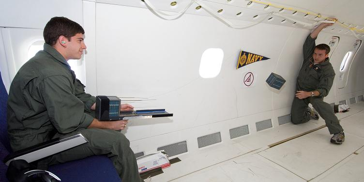
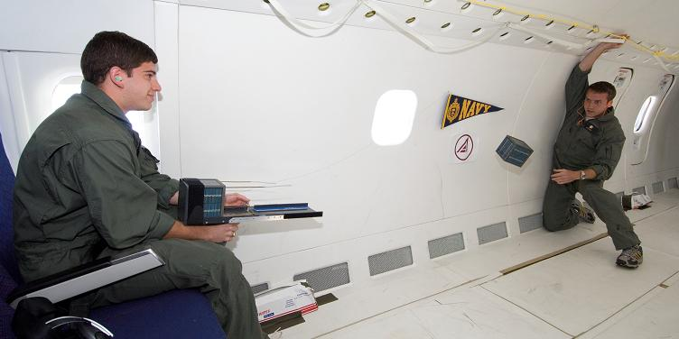
RAFT Amateur Radio Satellite Project
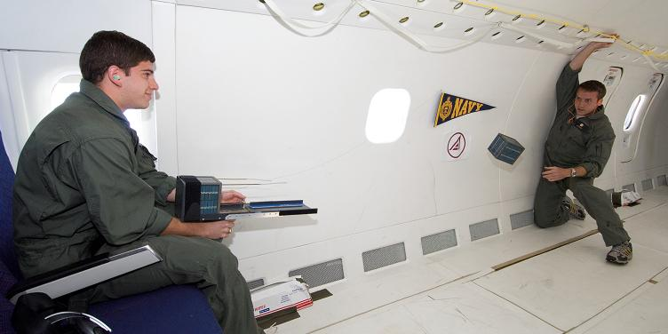
RAFT MISSION IS COMPLETE: RAFT de-orbited on 30 May 2007 after 5 months in space. The mission for RAFT was successful and in the last week, we finally got the Radar Fence Transponder Data we had been hoping to get. Please see the SAVE RAFT WEB PAGE!. .
PRE-LAUNCH INTEGRATION: Launched 10 December 2006 on Shuttle STS-116 and deployed in the first 2 hours of 21 Dec 2006. Delivered 25 Jan 2006 to JSC Houston for vibration testing. Then 17 July 2006 to Kennedy Space Center for Integration with the Shuttle. Photo above was delivery from USNA and testing the separation system in a Zero-G flight with NASA. The pre-launch debate was the deployment altitude to safely avoid re-contact with ISS. The plot below shows how our original altitude ot 180 has been reduced to 175, and by launch time 165 nautical miles was being considered which would shorten the life to only 2 months or less:
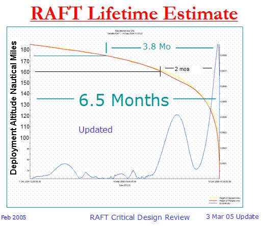
The top-inside view of RAFT is shown
below along with a photo of a visit by the then, NASA Administrator Admiral Steidle
who is now filling a professor chair at the Academy in the Aerospace Department.
Over 1 Kg of lead was added to RAFT to try to improve its orbital life. Layers can
be seen in the diagonal sandwich and on top of battery B2:
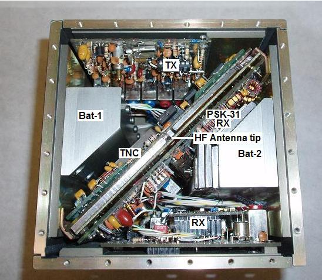
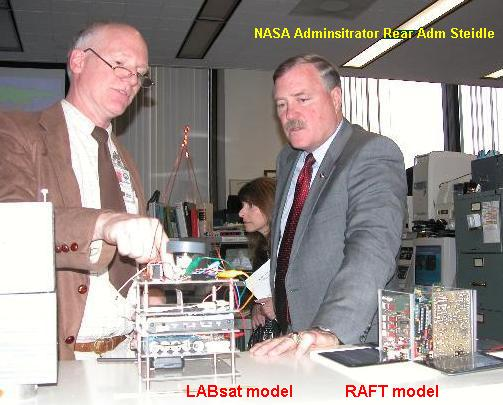
RAFT was a US Naval Academy Aerospace student amateur satellite project designed to give students real hands on experience in satellite engineering, design and communications. The USNA RAFT will accomplish these objectives:
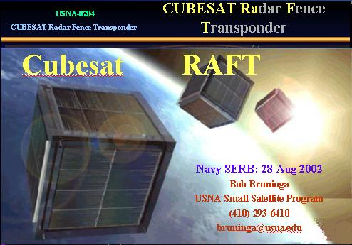
CUBESATS: Cubesats are a Stanford University program initiated by Dr. Bob Twiggs to provide low cost satellite launches for student experiments. Those cubesats are all 4" in size and are launched 3 at a time from simple standard launchers called P-PODS. As many as a dozen or more may be launched on a single launch vehicle. Link to Stanford CUBESATS or see DOD's MEPSI, and Others.
DOD Interest: The DOD interest in this RAFT project is its requirement to TRACK all space objects and the difficulty it will have in tracking these 4" cubesat clusters due to their large numbers and small size which is below the NSSS routine tracking ability. RAFT was approved by the DOD Space Experiments Review Board in the fall of 2002. Since DOD cannot pay for our project to fly on the typical Cubesat Russian (low cost) launcher, DOD developed their own 5" cubesat launcher.
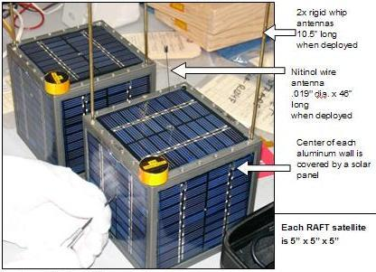
RAFT OBJECTIVES: The RAFT Mission is to provide a cubesat in the cubesat cluster which has an on-board receiver capable of identifying itself via the NSS satellite Radar Tracking system to help locate the Cubesats. Without this receiver, the Cubesats are too small to be detected by normal non-queued tracking systems, and so there is no easy way to find these individual cubesats once they have begun to spread from the original launch tracking elements.
TWO RAFT's: The requirement for two cubesats to mark the initial front and back of the spreading constellation, also gives us two opportunities for experimental communications payloads. We looked at several low power communications experiment possibilities and arrived at two designs. One is called RAFT and the other is called MARScom. This page describes common characteristics and RAFT itself. For unique detail info on each one, see their respective pages:
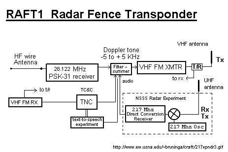
PACKET RELAY SECONDARY MISSION: The secondary mission of RAFT and MARScom are to provide packet digital communications relay for mobile amateur radio users to transmit their GPS coordinates and messages via the satellites. This is a continuation of the PCsat, PCSAT2 and ARISS missions. The downlink is received by a global system of volunteer ground stations that feed a live web page.
PACKET ==> VOICE COMMS RELAY SECONDARY MISSION: The primary limitation on single channel LEO satellite communications is the congestion on the uplink. The RAFT Packet ==> Voice transponder solves this problem by compressing the uplink into a single 1 second burst per station, and then expanding it to voice for the FM downlink. This way, students with nothing but a scanner receiver can hear all of the downlink communications (voice) yet the uplinking stations have a very low probabilty of collision due to the short duration of the uplink. A voice synthesizer converts the packet to voice. RAFT PSK-31 MULTI-USER DIGITAL TRANSPONDER
This transponder solves the primary problem of many amateur satellites and that is the contention on the single channel uplink. By using PSK-31, as many as 30 simultaneous users can be supported in keyboard-to-keyboard communications as shown below. Each channel is only about 60 Hz wide. This image shows the interference potential however, whenever the RAFT telemetry packet is transmitted. Users should therefore attempt to use the upper and lower ends of the spectrum.
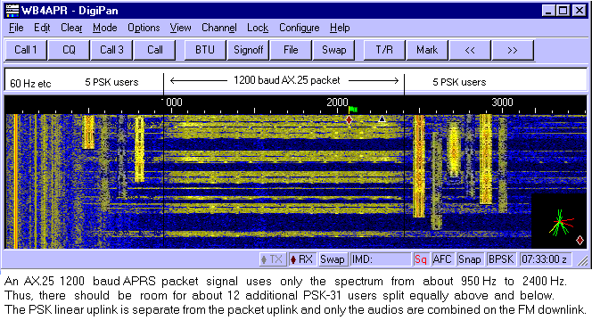
PRIMARY SPACE TRACKING MISSION: One RAFT will have a receiver for the NAVSPASUR radar system as shown in the block diagram above. (see photo). When it flies through the fence, it's direct-conversion double sideband receiver will mix the Doppler to baseband audio which will be added to the RAFT1's downlink audio for detection on the ground. A team consisting of Boston area AMSAT members (Tony Monterio, AA2TX, Dave Goncalves, W1EUJ, and Joe Fitzgerald, KM1P) are working on this NSSS part of the project. See Their WEB page. For telemetry, command and control, the RAFT's communications payload has an FM downlink suitable for this purpose. Independently, the 217 MHz receiver local oscillator is strong enough so that it can then also be heard by the NSSS radar receiver on the ground as a separate means of verification.
The following links have information on the NSSS RADAR FENCE (it used to be called NAVSPASUR) that spans all of the southern states in the USA. But this information has been gathered by non-DOD tech-ies and neither the DOD nor the naval Academy is responsible for its content.

Use any satellite tracking program to predict when an object will pass through the fence.
Just enter the coordinates of the main Kickapoo Transmitter (33.558N 98.737W) and watch
for the instant your object crosses the azimuths of 91.4 and 271.4 degrees from Kickapoo.
Because of the extremely high power of this VHF radar (over 700kW), it can be received by just about anyone with a handheld scanner receiver and an antenna pointed to the area in space where any spacecraft passes through the "fence". The radar is a pure carrier radiating upward 24 hours a day in a very narrow FAN beam as shown in the MAP above. Whenever a large spacecraft flies through that beam, you should be able to hear a "ping" on your SSB scanner at that frequency. Hear some example pings.

The above plot is the output from my SPASUR.EXE program for ISS intercepts viewed from Atlanta. It shows the elevation angle of the ISS when it passes through the fence and the elevation angle from NAVSPASUR. The yellow line shows the relative signal strength relative to the best possible path geometry and location near the transmitter site (Someone that lives 250 miles from the Texas transmitter site). You may download a copy of my SPASUR program.
Preliminary NSSS Verification Test: To give the students some familiarity with the operation of the Radar Fence, on 21 April 2004, we set up a dipole with reflector and detected the NSSS reflections from the Moon. The moon passes through the fence twice a day for about 2 weeks of every month. The pass lasts about a minute per pass. We recorded the event with DIGIPAN. See the 2 minutes of AOS and the 2 minutes of LOS.
ANTENNA DEPLOYMENT DESIGN:
Each of the two RAFT satellites have three antennas, one for HF, VHF and UHF. The VHF and UHF antennas are spring loaded and collapse within the other satellite to the 5" available, but extend to the required length on separation. Both antennas on each spacecraft are 10.75" long to provide equal spring separation pressure, but are individually tuned with an LC network designed by Tony. All of these antennas make no contact with the PLA-2 Launcher, but are mutually held in place by each other. On separation, their inertia will unpool their individual 4 foot long HF wire antennas, lightly held together by a tiny tip magnet. 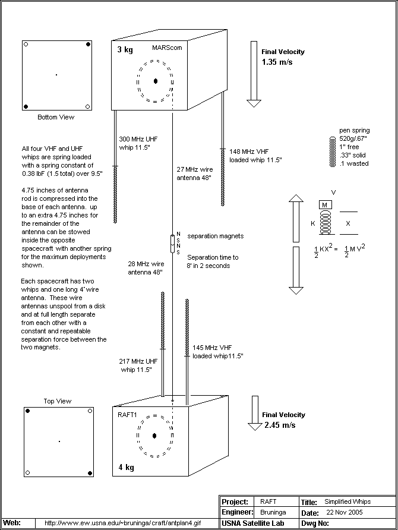
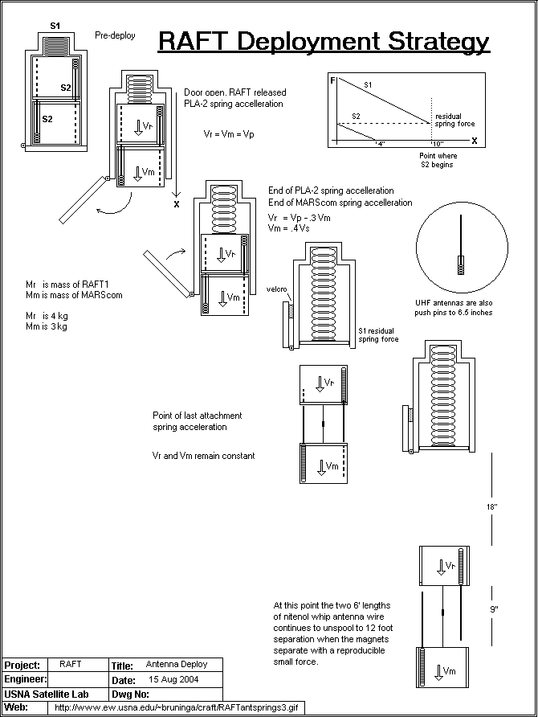
The next two photos show the launcher used on the 4" cubesat MEPSI mission and a deployment photo. A higher resolution photo link is in the next paragraph.
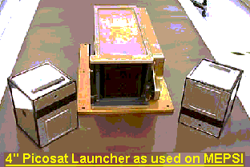 ... 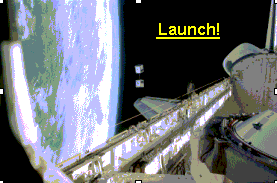
LIFETIME: Unfortunately, the RAFT satellites will be deployed after the Space Shuttle leaves the Space station on its way back to Earth. Because the primary mission of STS-116 is to deliver massive cargo to ISS, the ISS will be brought down to 205 miles for rendesvous with the Shuttle. Then, after departing the station, the current deployment altitude for RAFT is expected to be only 185 miles which is quite low. Mission life for RAFT1 is estimated as 6.5 months See plot and for MARScom as 5 Months See plot.
Power System:
One problem with pico sized satellites is the requirement to have enough series connected solar cells on each panel to add up to a useable bus voltage. On RAFT this problem is solved by using our innexpensive 8 volt panels to parallel charge two sets of batteries during normal receive operations and then stacking the batteries in series when the transmitter is keyed.
Attitude Control:
RAFT1 will use a permanent magnet to align itself with the earths magnetic field. This allows its attitude to be predictible. The plot below shows the alignment of the RAFT1 antennas during West passes over the Naval Academy.
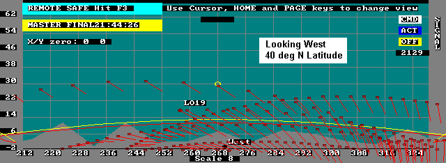
To the north the antennas always appear vertical. Low on the horizon to the south they are nearly horizontal with the null pointed towards us. We did this for several directions and for different latitudes (see Plots)
An early idea was to hve a long HF wire antenna with a tip mass to provide a gravity gradient stabilization as shown below. But this was rejected because it would present a large cross section and increased drag to significantly shorten the mission life time.
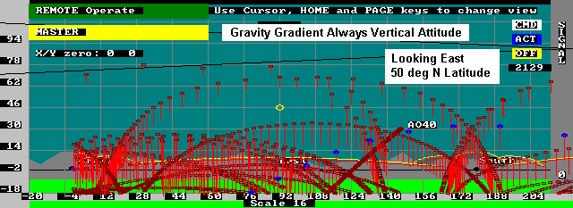
See docs-page for details. CDR was 23 Feb 2005 at USNA. PhaseII Shuttle Safety review was 10 Feb 2005 at JSC. Phase0/I was 16 Dec 04 at JSC and PDR was complete on 19 Nov 2004. (PDR action items). The battery working group meet on 13 Dec 2004.
You are visitor:
since 21 Aug 2002.
|
|
|
{kind=link}
{kind=link}
{kind=link}
{kind=link}
{kind=link}
{kind=link}
{kind=link}
{kind=link}
{kind=link}
{kind=link}
{kind=link}
{kind=link}
{kind=link}
{kind=link}
{kind=link}
{kind=link}